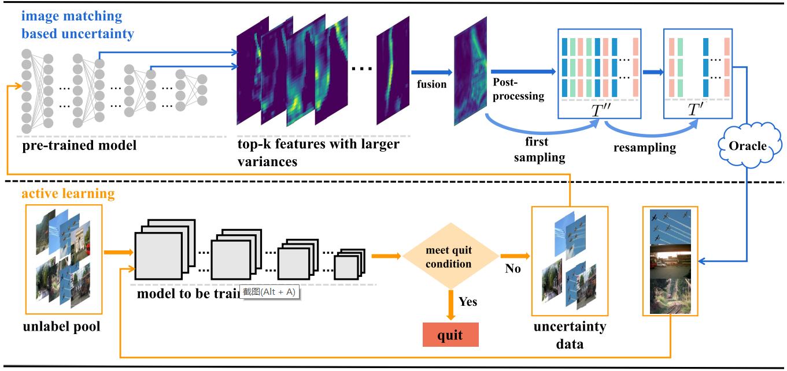
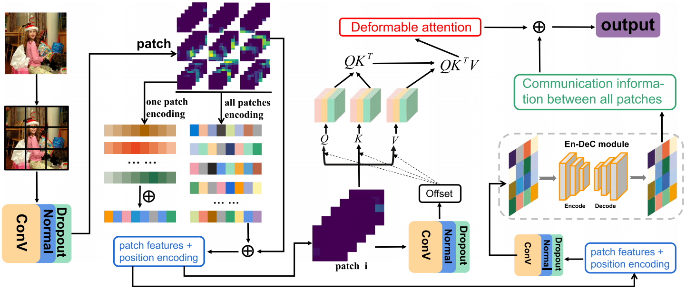

Shuzhou Sun Ph.D. candidate Center for Machine Vision and Signal Analysis, University of Oulu, Finland Research Interests: Deep learning; Computer vision; Causal inference E-mail: shuzhou.sun{at}oulu.fi
Evidential Uncertainty and Diversity Guided Active Learning for Scene Graph Generation
Shuzhou Sun, Shuaifeng Zhi, Janne Heikkilä and Li Liu
in ICLR, 2023
[Paper]
[Bibtex]

Unsupervised Fusion Feature Matching for Data Bias in Uncertainty Active Learning
Wei Huang*, Shuzhou Sun*, Xiao Lin, Ping Li, Zhu Lei, Jihong Wang, C. L. Philip Chen and Bin sheng
in IEEE TNNLS, 2022
[Paper]
[Bibtex]

EAPT: Efficient Attention Pyramid Transformer for Image Processing
Xiao Lin*, Shuzhou Sun*, Wei Huang, Bin Sheng, Ping Li, and David Dagan Feng
in IEEE TMM, 2021
[Paper]
[Bibtex]
Academic Service
Reviewer of IEEE Transactions on Circuits and Systems for Video Technology
Reviewer of IEEE International Conference on Multimedia & Expo
Reviewer of Pattern Recognition & Expo
Reviewer of The Journal of Supercomputing & Expo
Address
Center for Machine Vision and Signal Analysis, P.O.Box 4500 FI-90014 University of Oulu, Finland.